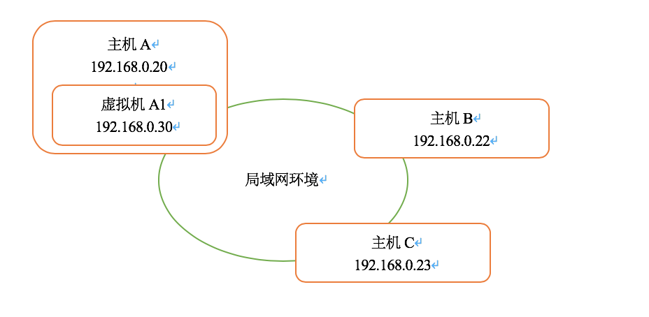
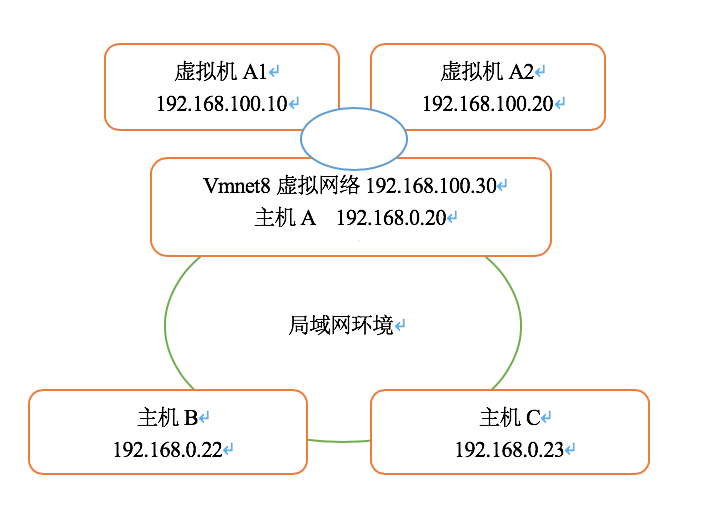
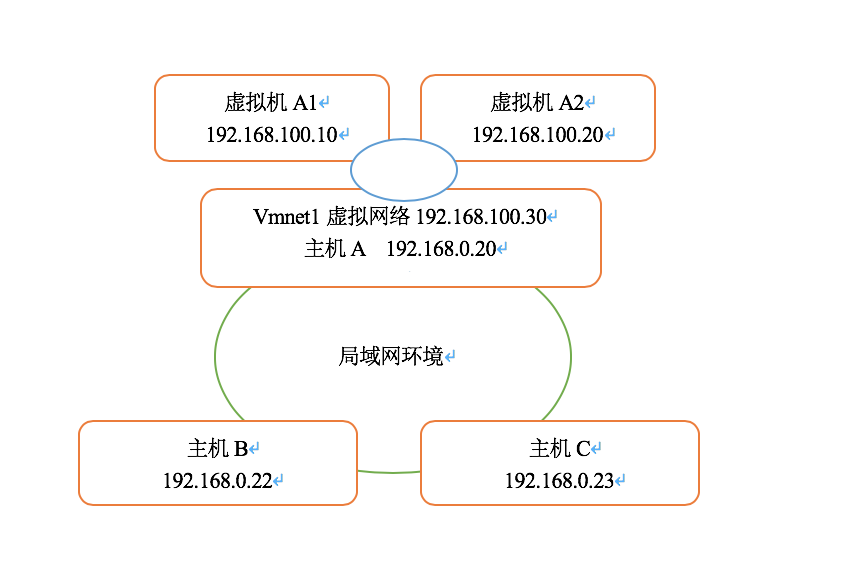

虚拟机三种网络模式介绍
bridged（桥接模式）
在这种模式下，使用VMnet0虚拟交换机，虚拟机与物理机连的是同一个网络，虚拟机和物理机是并列关系，可以说是地位相同的，它可以访问网内任何一台机器。在桥接模式下，可以手工配置它的TCP/IP配置信息（IP、子网掩码等，而且还要和宿主机器处于同一网段），以实现通过局域网的网关或路由器访问互联网，还可以将IP地址和DNS设置成“自动获取”。如果网络环境是ip资源很缺少的下不太适用，可能造成ip冲突。

上图中，A、A1、B、C可以互相访问的，如果A可以访问外网，A1也可以访问外网。
NAT（网络地址转换模式）
使用NAT模式，就是让虚拟机借助NAT（网络地址转换）功能，通过宿主机器所在的网络来访问公网，物理机充当了路由器的角色，如果物理机不能上网，那虚拟机也不能上网。这种模式的兼容性是非常好的，因为当物理机的网络环境变化时，虚拟机的网络并不会有影响。NAT模式下的虚拟机的TCP/IP配置信息是由VMnet8虚拟网络的DHCP服务器提供的，因此虚拟系统也就无法和本局域网中的其他真实主机进行通讯。

上图中，A、A1、A2是可以互相访问的，但A1和A2都不能访问B或C，相反地，B和C都不能访问A1和A2。另外如果A可以访问外网，A1、A2也可以访问外网。
host-only（仅主机模式）
在host-only模式中，虚拟机只能与虚拟机、主机互访，但虚拟机和外部的网络是被隔离开的，也就是不能上Internet。在host-only模式下，虚拟系统的TCP/IP配置信息（如IP地址、网关地址、DNS服务器等），都是由VMnet1虚拟网络的DHCP服务器来动态分配的。

上图中，A、A1、A2是可以互相访问的，但A1和A2都不能访问B或C，相反地，B和C都不能访问A1和A2。即使A可以访问外网，A1、A2也是不可以访问外网。